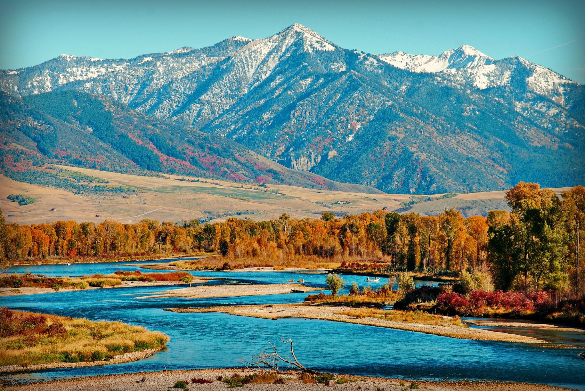

Colorado River
The Colorado River is one of the principal rivers in the Southwestern United States and in northern Mexico. The 1,450-mile-long river, the 5th longest in the United States, drains an expansive, arid watershed that encompasses parts of seven U.S. states and two Mexican states.
Arkansas River
The Arkansas River is a major tributary of the Mississippi River. It generally flows to the east and southeast as it traverses the U.S. states of Colorado, Kansas, Oklahoma, and Arkansas. The river's source basin lies in Colorado, specifically the Arkansas River Valley.
Rogue River
The Rogue River in southwestern Oregon in the United States flows about 215 miles in a generally westward direction from the Cascade Range to the Pacific Ocean. Known for its salmon runs, whitewater rafting, and rugged scenery, it was one of the original eight rivers named in the Wild and Scenic Rivers Act of 1968.

Snake River
The Snake River is a major river in the interior Pacific Northwest region of the United States. About 1,080 miles long, it is the largest tributary of the Columbia River, which is the largest North American river that empties into the Pacific Ocean.
Illinois River
The Illinois River begins with the confluence of the Des Plaines and Kankakee rivers in the Chicago metropolitan area, and it generally flows to the southwest across Illinois, until it empties into the Mississippi near Grafton, Illinois. Its drainage basin extends into southeastern Wisconsin, northwestern Indiana, and a very small area of southwestern Michigan in addition to central Illinois. Along its banks are several river ports, including the largest, Peoria, Illinois. Historic and recreation areas on the river include Starved Rock, and the internationally important wetlands of the Emiquon Complex and Dixon Waterfowl Refuge.
Gallatin River
The river was named in July 1805 by Meriwether Lewis at Three Forks. The eastern fork of the three, it was named for Albert Gallatin,[3] the U.S. Treasury Secretary from 1801–14. The western fork was named for President Thomas Jefferson and the central fork for Secretary of State James Madison.
Ocoee River
The Toccoa River and Ocoee River are the names in use for a single 93-mile-long (150 km)[3][better source needed] river that flows northwestward through the southern Appalachian Mountains of the southeastern United States. It is a tributary of the Hiwassee River, which it joins in Polk County, Tennessee, near the town of Benton. Three power generating dams are operated along it.
Salmon River
The Salmon River, also known as the "River of No Return", is a river located in the U.S. state of Idaho in the western United States. It flows for 425 miles through central Idaho, draining a rugged, thinly populated watershed of 14,000 square miles
Gauley River
The Gauley River is a 105-mile-long river in West Virginia. It merges with the New River to form the Kanawha River, a tributary of the Ohio River. The river features numerous recreational whitewater areas, including those in Gauley River National Recreation Area downstream of the Summersville Dam.